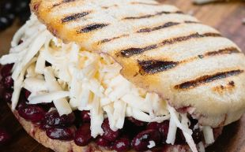

Home
Domino

Description
Named for its resemblance to domino pieces, this is the simplest arepa:
black beans and white cheese.
It's a classic, meat-free option.
Ingredients
- -Precooked corn flour (e.g., Harina P.A.N.)
- - Warm water
- - Salt
- -Oil (for cooking)
- -White Cheese
- -Black Beans
Step by Step
- Meassure the Ingredients
- Mix the Dough
- Knead and Rest
- Shape the Arepas
- Coon on Skillet
- Bake for Fluffiness(Optional)
- Slice and Fill